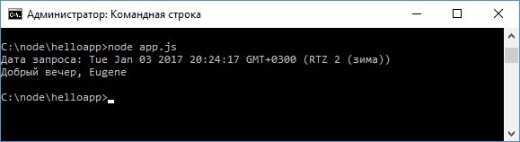
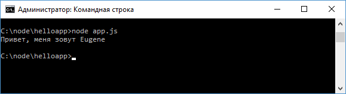

Работа с модулями стр.2
На консоль выводится та строка, которая определена в файле greeting.js. Теперь изменим файл greeting.js:
let
currentDate = new Date();
module.exports.date = currentDate;
module.exports.getMessage = function(name){
let
hour = currentDate.getHours();
if(hour > 16)
return
"Добрый вечер, " + name;
else if(hour
>
10)
return
"Добрый день, " + name;
else
return
"Доброе утро, " + name;
}
Здесь определена переменная currentDate. Однако из
вне она недоступна. Она доступна только в пределах данного модуля. Чтобы какие
переменные или функции модуля были доступны, необходимо определить их в объекте
module.exports. Объект module.exports - это то, что возвращает функция require()
при получении модуля.
Вообще объект module представляет ссылку на текущий
модуль, а его свойство exports определяет все свойства и методы модуля, которые
могут быть экспортированы и использованы в других модулях. Подробнее определение
загрузки модуля и все его функции можно посмотреть на странице
https://github.com/nodejs/node/blob/master/lib/module.js.
В частности, здесь
определяется свойство date и метод getMessage, который принимает некоторый
параметр.
Далее изменим файл app.js:
const
os = require("os");
const greeting = require("./greeting");
//
получим имя текущего пользователя
let userName = os.userInfo().username;
console.log(`Дата запроса: ${greeting.date}`);
console.log(greeting.getMessage(userName));
Все экспортированные методы и свойства модуля доступны по имени: greeting.date и greeting.getMessage(). Перезапустим приложение:

Определение конструкторов и объектов в модуле
Кроме определения простейших функций или свойств в модуле могут определяться сложные объекты или функции конструкторов, которые затем используются для создания объектов. Так, добавим в папку проекта новый файл user.js:
function
User(name, age){
this.name
= name;
this.age
= age;
this.displayInfo =
function(){
console.log(`Имя: ${this.name} Возраст:
${this.age}`);
}
}
User.prototype.sayHi = function() {
console.log(`Привет,
меня зовут ${this.name}`);
};
module.exports = User;
КЗдесь определена стандартная функция конструктора User, которая принимает два параметра. При этом весь модуль теперь указывает на эту функцию конструктора: module.exports = User;
Подключим и используем этот модуль в файле app.js:
const
User = require("./user.js");
let eugene = new User("Eugene", 32);
eugene.sayHi();
Результат:

Назад: Работа с модулями ч.1 | Далее: Объект global и глобальные переменные
Блок кода или функции, которые могут быть использованы в других файлах
Дополнительная библиотека
Метод запуска программы
export()
require()
delete()